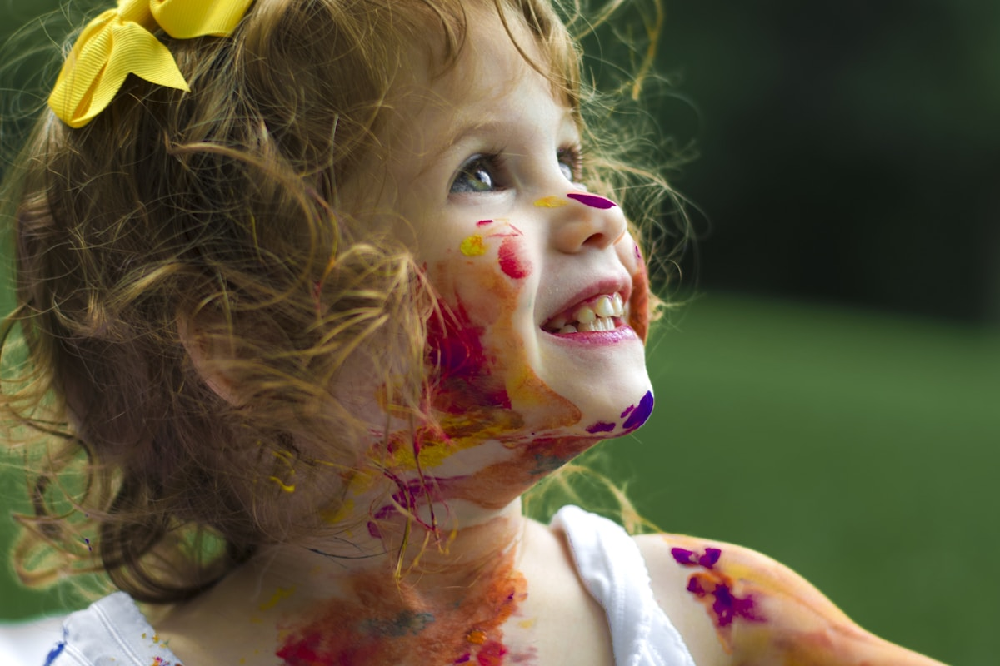
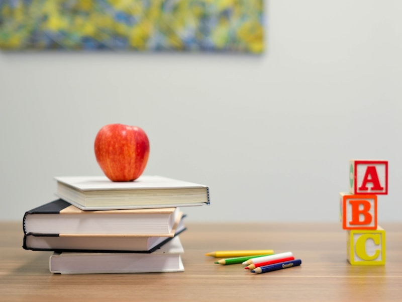
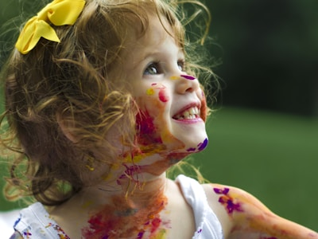

Günün ne zaman değiştiği net biçimde anlatılır.
MERAK İÇİN GÜVENLİ ALAN
Küçük adımlar,
geniş dünyalar.
Çocuğun günlük ritmini ebeveynler için açık, sakin ve anlaşılır biçimde sunan okul öncesi arayüz demosu.
Günü keşfet
01Önce güven.
Önce güven.
Sonra merak.
Bilgi yapısı; geçişleri, günlük rutini ve aile iletişimini görünür kılar. Gösterilen kişiler, programlar ve uygulamalar örnek içeriktir.
Oyun, dinlenme ve açık hava arasında nefes alan akış.
Belirsiz vaatler yerine anlaşılır süreç bilgisi.

ÖRNEK GÜN AKIŞI
Her bölümün
bir amacı var.
- Karşılama · yumuşak başlangıç
- Merak zamanı · küçük grup keşfi
- Açık hava · hareket ve gözlem
- Sakin saat · dinlenme ve kitap

YEREL DEMO ARACI
İlk görüşme rehberi
Kişisel bilgi istemez. Seçimler tarayıcıda işlenir, gönderilmez ve kaydedilmez.